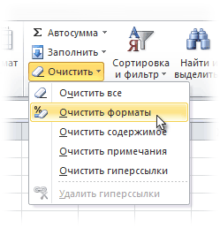
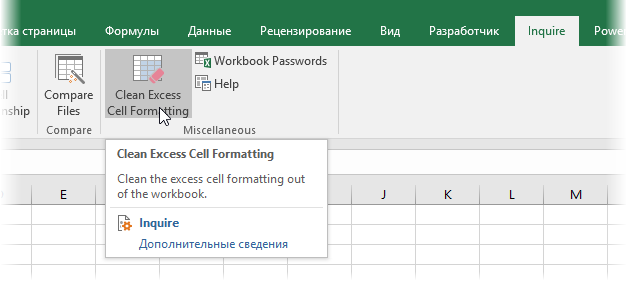
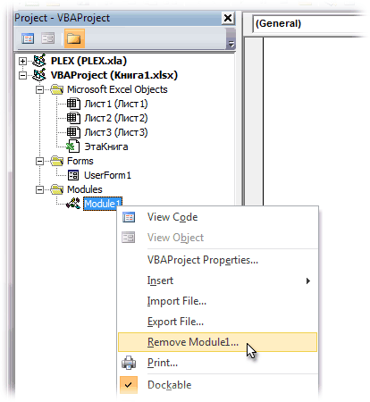
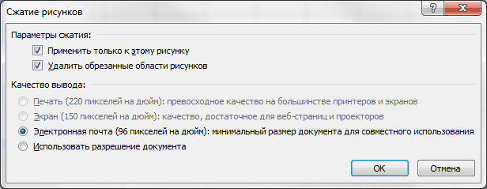
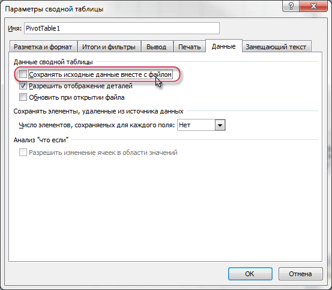
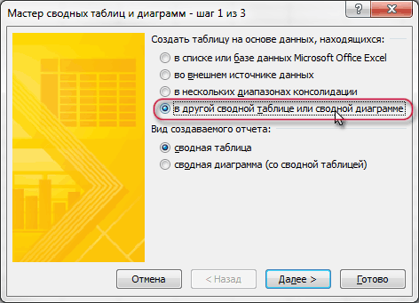
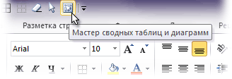
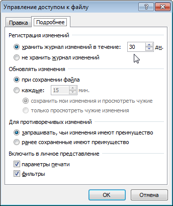
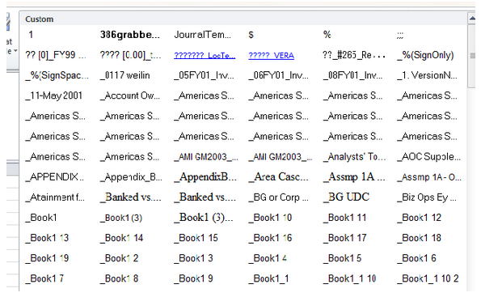

Как уменьшить размер файла и ускорить его
83387 11.11.2012 Скачать пример
Скачать видео
Если в один прекрасный момент вы осознаете, что ваш основной рабочий файл в Excel разбух до нескольких десятков мегабайт и во время открытия файла можно смело успеть налить себе кофе, то попробуйте пробежаться по описанным ниже пунктам - возможно один или несколько из них укоротят вашего "переростка" до вменяемых размеров и разгонят его "тормоза" :)
Проблема 1. Используемый диапазон листа больше, чем нужно
Если ваша таблица занимает 5 на 5 ячеек, то это отнюдь не означает, что Excel запоминает при сохранении этого файла только 25 ячеек с данными. Если вы в прошлом использовали какие-либо ячейки на этом листе, то они автоматически включаются в используемый диапазон (так называемый Used Range), который и запоминается при сохранении книги. Проблема в том, что при очистке используемых ячеек Excel далеко не всегда автоматически исключает их из используемого диапазона, т.е. начинает запоминать в файле больше данных, чем реально имеется.
Проверить это просто – нажмите на клавиатуре сочетание клавиш Ctrl+End и посмотрите куда переместится активная ячейка. Если она прыгнет на фактическую последнюю ячейку с данными на листе – отлично. А если вдруг ускачет сильно правее и/или ниже "в пустоту" – дело плохо: все эти ненужные пустые ячейки Excel тоже запоминает внутри файла.
Лечится это, тем не менее, достаточно легко:
Если в вашей книге очень много таких листов, то проще, наверное, использовать короткий макрос.
Проблема 2. Используется старый формат XLS вместо новых XLSX, XLSM и XLSB
Много лет и версий подряд еще с начала девяностых в Excel был один формат файлов - XLS. Это, конечно, убирало проблемы совместимости, но, сам по себе, этот формат давно устарел и имел много неприятных недостатков (большой размер, непрозрачность внутренней структуры данных, легкую повреждаемость и т.д.)
Начиная с верии Excel 2007 Microsoft ввела новые форматы сохранения файлов, использование которых заметно облегчает жизнь и - ваши файлы:
Вывод: всегда и везде, где можно, переходите от старого формата XLS (возможно, доставшегося вам "по наследству" от предыдущих сотрудников) к новым форматам.
Проблема 3. Избыточное форматирование
Сложное многоцветное форматирование, само-собой, негативно отражается на размере вашего файла. А условное форматирование еще и ощутимо замедляет его работу, т.к. заставляет Excel пересчитывать условия и обновлять форматирование при каждом чихе.
Оставьте только самое необходимое, не изощряйтесь. Особенно в тех таблицах, которые кроме вас никто не видит. Для удаления только форматов (без потери содержимого!) выделите ячейки и выберите в выпадающем списке Очистить - Очистить форматы (Clear - Clear Formats) на вкладке Главная (Home):

Особенно "загружают" файл отформатированные целиком строки и столбцы. Т.к. размер листа в последних версиях Excel сильно увеличен (>1 млн. строк и >16 тыс. столбцов), то для запоминания и обрабоки подобного форматирования нужно много ресурсов. В Excel 2013-2016, кстати, появилась надстройка Inquire, которая содержит инструмент для быстрого избавления от подобных излишеств - кнопку Удалить избыточное форматирование (Clean Excess Cell Formatting):

Она мгновенно удаляет все излишнее форматирование до конца листа, оставляя его только внутри ваших таблиц и никак не повреждая ваши данные. Причем может это сделать даже для всех листов книги сразу.
Если вы не видите у себя в интерфейсе вкладку Inquire, то ее необходимо подключить на вкладке Разработчик - Надстройки COM (Developer - COM Addins).
Проблема 4. Ненужные макросы и формы на VBA
Большие макросы на Visual Basic и особенно пользовательские формы с внедренной графикой могут весьма заметно утяжелять вашу книгу. Для удаления:

Также код может содержаться в модулях листов - проверьте их тоже. Также можно просто сохранить файл в формате XLSX без поддержки макросов - все макросы и формы умрут автоматически. Также можно воспользоваться инструментом Очистить книгу от макросов из надстройки PLEX.
Проблема 5. Именованные диапазоны
Если в вашем файле используются именованные диапазоны (особенно с формулами, динамические или получаемые при фильтрации), то имеет смысл от них отказаться в пользу экономии размера книги. Посмотреть список имеющихся диапазонов можно нажав Ctrl+F3 или открыв окно Диспетчера имен (Name Manager) на вкладке Формулы (Formulas):
Также вычищайте именованные диапазоны с ошибками (их можно быстро отобрать с помощью кнопки Фильтр в правом верхнем углу этого окна) - они вам точно не пригодятся.
Проблема 6. Фотографии высокого разрешения и невидимые автофигуры
Если речь идет о фотографиях, добавленных в книгу (особенно когда их много, например в каталоге продукции), то они, само-собой, увеличивают размер файла. Советую сжимать их, уменьшая разрешение до 96-150 точек на дюйм. На экране по качеству это совершенно не чувствуется, а размер файла уменьшает в разы. Для сжатия воспользуйтесь кнопкой Сжать рисунки (Compress pictures) на вкладке Формат (Format):

Кроме видимых картинок на листе могут содержаться и невидимые изображения (рисунки, фотографии, автофигуры). Чтобы увидеть их, выделите любую картинку и на вкладке Формат (Format) нажмите кнопку Область выделения (Selection Pane).
Для удаления вообще всех графических объектов на текущем листе можно использовать простой макрос:
|
1 2 3 4 5 6 7 8 9 10 |
Sub Delete_All_Pictures() 'макрос для удаления всех картинок на текущем листе
Dim objPic As Shape
For Each objPic In ActiveSheet.Shapes objPic.Delete Next objPic
End Sub |
Проблема 7. Исходные данные сводных таблиц
По-умолчанию Excel сохраняет данные для расчета сводной таблицы (pivot cache) внутри файла. Можно отказаться от этой возможности, заметно сократив размер файла, но увеличив время на обновление сводной при следующем открытии книги. Щелкните правой кнопкой мыши по сводной таблице и выберите команду Свойства таблицы (Pivot Table Properties) - вкладка Данные (Data) - снять флажок Сохранять исходные данные вместе с файлом (Save source data with file):

Если у вас несколько сводных таблиц на основе одного диапазона данных, то сократить размер файла здорово помогает метод, когда все сводные таблицы после первой строятся на основе уже созданного для первой таблицы кэша. В Excel 2000-2003 это делается выбором переключателя на первом шаге Мастера сводных таблиц при построении:

В Excel 2007-2016 кнопку Мастера сводных таблиц нужно добавлять на панель вручную - на ленте такой команды нет. Для этого щелкните по панели быстрого доступа правой кнопкой мыши и выберите Настройка панели быстрого доступа (Customize Quick Access Toolbar) и затем найдите в полном списке команд кнопку Мастер сводных таблиц (PivotTable and PivotChart Wizard):

Проблема 8. Журнал изменений (логи) в файле с общим доступом
Если в вашем файле включен общий доступ на вкладке Рецензирование - Доступ к книге (Review - Share Workbook), то внутри вашего файла Excel на специальном скрытом листе начинает сохраняться вся история изменений документа: кто, когда и как менял ячейки всех листов. По умолчанию, такой журнал сохраняет данные изменений за последние 30 дней, т.е. при активной работе с файлом, может запросто занимать несколько мегабайт.
Мораль: не используйте общий доступ без необходимости или сократите количество дней хранения данных журнала, используя вторую вкладку Подробнее (Advanced) в окне Доступ к книге. Там можно найти параметр Хранить журнал изменений в течение N дней (Keep change history for N days) или совсем отключить его:

Проблема 9. Много мусорных стилей
Про эту пакость я уже подробно писал ранее в статье о том, как победить ошибку "Слишком много форматов ячеек". Суть, если кратко, в том, что если вы разворачиваете на вкладке Главная список Стили ячеек (Home - Cell Styles) и видите там очень много непонятных и ненужных стилей, то это плохо - и для размера вашего файла Excel и для его быстродействия.

Удалить ненужные стили можно с помощью макроса или готовой команды из надстройки PLEX.
Проблема 10. Много примечаний
Примечания к ячейкам, конечно, не самый вредный момент из всех перечисленных. Но некоторые файлы могут содержать большое количество текста или даже картинок в примечаниях к ячейкам. Если примечания не содержат полезной для вас информации, то их можно легко удалить с помощью команды на вкладке Главная - Очистить - Очистить примечания (Home - Clear - Clear Comments).